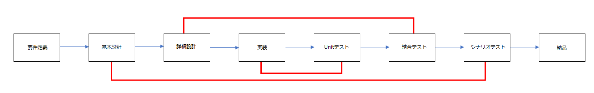

[Project design] プログラム最終テスト - ST(System test(Standard, Scenario))
こんにちは。明月です。
この投稿はプログラム最終テスト - ST(System test(Standard, Scenario))に関する説明です。
プログラムが納品する前のテストでSTテストと言います。略語がSystem testと言いますが、人によりStandard(ステンダード:標準)やScenarioテストという人もいます。
略語の解析だけ違いますが、みんな認識するのはテストの流れは似ています。
以前にテスト範囲に関して説明したことがあります。

上の流れでテストが実施しますが、最終テストは基本設計に対するテストです。
つまり、以前の単体テスト(UT)や結合テスト(IT)にはプログラムに関するバグや操作に関するテストがメイン項目だと、STにはプログラムの仕様によるテストがメインです。つまり、プログラム的なバグではなく、論理的なバグに関するテストです。
例えば、特定要請ページで生成だれたデータを特定な流れにより計算して最終的なデータが表示されることが正確かというテストです。
以前のテストまではプログラムツールやライブラリを通って自動化テストをできることならSTはすべてのテストケースは人が実施して値が正確かを確認しなければならないです。
テストの方法に関してはプログラムの種類や型により違います。
例えば、ゲームの場合は普通にアルファー、クローズベータ、オープンベータのタイプでテストが行う場合が多いし、一般プログラムツールに関してもUnstableバージョン、Stableバージョン(安定化バージョン)を区分してUnstableバージョンがテストバージョン、StableやLTSバージョンが正式なバージョンになります。
そしてウェブ環境にはテストバージョン(Dev環境バージョン)、正式バージョン(Productionバージョン、本番バージョン)で区分して配布する(Deploy)場合もあります。これはプログラムの種類やバグの重要性により方法と期間が区分になります。
STテスト仕様書を作成する時にはステップ数、つまり、テストの項目数は普通はプログラムコードライン数の5~10%を作成します。
つまり、プログラムのコードが総10万ラインだとテスト項目を5千件から1万件ほどを作成します。テストの仕様書の内容は基本設計により論理的なデータ確認なので、単純なUTやITで確認したものでは除きます。
例えば、PDFや帳票を出力するボタンを押下する時にちゃんとダウンロードができるかどうかはSTの項目ではありません。STの項目はPDFにデータがちゃんと載せているかを確認することですね。
STの項目だと言えば、どの特定な権限を持っている場合、依頼ページからデータが生成されるか、別の権限を持っている場合はデータ生成ができなくなるか、あるいは権限によりデータがちゃんと見えるかとかデータ計算は仕様とおりに計算されているかの検査です。
もちろん、IT部分と重ねている部分もあると思いますが、プログラムも結局人が使うツールなので、人が操作する時に、感じるスクリプトと動きが自然するか、パフォーマンス、データの正確度に関するテストですね。
例えば、ウェブテーブルタグには値が正確に表示されますが、画面が見にくい表示され、人が間違って認知する確率があるかボタンを探すのが大変かの様々に関する検査です。
STはプログラムを納品する前の最終テストだからプロジェクトの権限に関しても重要です。
プロジェクトのチームを構成する時、メインメンバーがPM(Project Manager)とシニアプログラマー(Senior Developer)と品質管理者(Quality manager)ですが、PMはプロジェクトのスケジュールと全体的な管理、シニアプログラマーは開発に関する総責任者、品質管理者はプロジェクトのテストを責任します。
プロジェクトのサイズと構成によりその責任が違いますが、普通はプログラムのエラーや要求事項に関するエラーなら品質管理者(Quality manager)が責任する場合が多いです。(これがプログラムのタイプや比重により構成が変わる部分ですが、普通はPMとシニアプログラマー、品質管理者に分けます。)
そのため、品質管理者がプロジェクトの中で権限が強いし、プロジェクトのSTの領域はかなり重要な部分です。
プロジェクトの特性によりSTの期間と人力が変わるし、そのため、プログラムの値段も変わる場合もたくさんあります。
中大型のミドルウェアやOfflineプログラムの場合は配布した後でバッチや修正配布が可能な場合はSTの期間と人力の値段に下がる場合もあるので、プログラムの値段が下がる場合もあります。
なので、Offline製品よりOnline製品がもっと安い場合もあります。でも、それがSTの値段算出によりなのでOnlineだって無条件に安いということではありません。
ほとんどのフトウェアプログラムはOfflineやOnlineでも簡単にアップデートが不可能な製品が多いです。例えば、基幹産業(鉄道、飛行機、電気、ガス)や金融、医療などのソフトウェアは一回にインストールされたらアップデートが難しいです。なのでプログラムの製造値段もすごく高いですが、テスト工程の値段もすごく高いです。
ウェブサービスだと言っても社内SEポータルサービスが開始するとその仕様により会社の組織が構成され業務標準になる場合が多いので、間違って作成してデータが間違って格納されたら途中で修正するのが考えより簡単ではありません。
小さいプロジェクトなら普通の開発者がテストまで実施して納品する場合もありますが、その時にしっかりテストを行わなくてバグが発生する場合も多いです。
理由はUTやITの技術的なテストが終わってSTでまたテストする項目があるかと思いがあるからですね。私も新人の時に、いや今でもたまに行うミスですね。
その時の私の経験ではUTやITのミスで発生したバグより、STで発生したバグがもっと致命的なバグも結構あるでしょう。
例えば、ユーザが作動するために特定なデータが溜まると思えば、間違いデータがそのままで3~4か月ごろに溜まって、後で気づけました。その後でデータを修正しようと思えば、間違いデータがもう何万件に格納されたし、様々なテーブルにレファレンスされ、修正が難しくなりました。
普通、UTやITの技術ミスはデータがNULLや規則的なバグが多いですが、STに発生するバグはエラーが発生することもないし、不規則的な要素も多いのでデータを確認して修正するためのバッチを作成することも簡単ではありません。
STの場合は決まている方法論やテスト方法はありません。技術的な要素もないので、説明するのはここまでですね。
STの工程を重要に思って、良い品質なプログラムを作成しましょう。
ここまでプログラム最終テスト - ST(System test(Standard, Scenario))に関する説明でした。
ご不明なところや間違いところがあればコメントしてください。
- [Project design] プログラム最終テスト - ST(System test(Standard, Scenario))2021/10/26 19:10:07
- [Project design] プログラム結合テスト - IT(Integration test)2021/10/25 20:12:17
- [Project design] プログラム検証とテスト - Unitテスト2021/10/22 19:34:09
- [Project design] プログラム制作(コーディング) - クラス作成方法2021/10/20 19:28:09
- [Project design] プログラム制作(コーディング) - 関数作成方法2021/10/19 21:01:32
- [Project design] 詳細設計(インターフェース設計と抽象化作業)2021/10/18 18:23:15
- [Project design] 基本設計(画面設計とDB設計)2021/10/17 21:21:11
- [Project design] 要件定義(要求事項整理)2021/10/15 19:28:58
- check2024/04/10 19:03:53
- [Java] 64.Spring bootとReactを連結する方法(Buildする方法)2022/03/25 21:02:18
- [Javascript] Node.jsをインストールしてReactを使う方法2022/03/23 18:01:34
- [Java] 63. Spring bootでcronスケジューラとComponentアノテーション2022/03/16 18:57:30
- [Java] 62. Spring bootでWeb-Filterを設定する方法(Spring Security)2022/03/15 22:16:37
- [Java] JWT(Json Web Token)を発行、確認する方法2022/03/14 19:12:58
- [Java] 61. Spring bootでRedisデータベースを利用してセッションクラスタリング設定する方法2022/03/01 18:20:52
- [Java] 60. Spring bootでApacheの連結とロードバランシングを設定する方法2022/02/28 18:45:48
- [Java] 59. Spring bootのJPAでEntityManagerを使い方2022/02/25 18:27:48
- [Java] 58. EclipseでSpring bootのJPAを設定する方法2022/02/23 18:11:10
- [Java] 57. EclipseでSpring bootを設定する方法2022/02/22 19:04:49
- [Python] Redisデータベースに接続して使い方2022/02/21 18:23:49
- [Java] Redisデータベースを接続して使い方(Jedisライブラリ)2022/02/16 18:13:17
- [C#] Redisのデータベースを接続して使い方2022/02/15 18:46:09
- [CentOS] Redisデータベースをインストールする方法とコマンドを使い方2022/02/14 18:33:07